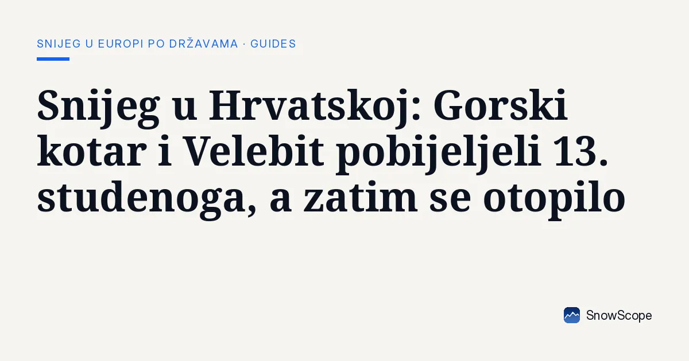

Croatia: snow today
Croatia: snow today. Hrvatske planine prošli su tjedan kratko, ali stvarno okusile zimu. U petak 13. studenoga na gornje staze sjevernog Velebita …
Snijeg u Hrvatskoj: Gorski kotar i Velebit pobijeljeli 13. studenoga, a zatim se otopilo

Hrvatske planine prošli su tjedan kratko, ali stvarno okusile zimu. U petak 13. studenoga na gornje staze sjevernog Velebita palo je oko 30 cm snijega, na Bjelolasicu 29 cm, a na Platak i Risnjak po 19 cm. Četiri dana kasnije sve se otopilo: u četvrtak 19. studenoga nijedno hrvatsko skijalište ni skijaška planina nema snijega na tlu. Evo kako je prošao tjedan, što su izmjerile meteorološke postaje i kada stiže sljedeći snijeg.
Petak 13. studenoga: jedan dan snijega
Gotovo sav snijeg ovog tjedna pao je u jednom danu, duž visokih grebena između Rijeke i Like. Zavižan, na vrhu sjevernog Velebita (1676 m), dobio je oko 30 cm na gornjim padinama. Bjelolasica, staro skijalište Gorskog kotara na 1534 m, dobila je 29 cm. Platak iznad Rijeke i susjedni Risnjak dobili su po oko 19 cm.
U unutrašnjosti je palo mnogo manje. Sljeme iznad Zagreba dobilo je tek oko 3 cm, a brda Hrvatskog zagorja ostala su zelena. Svježi snijeg se uvijek slegne, pa visina na tlu nikad nije dosegla količinu koja je pala: na Velebitu je od 30 cm novog snijega u dva dana ostalo 10 do 11 cm pokrivača.